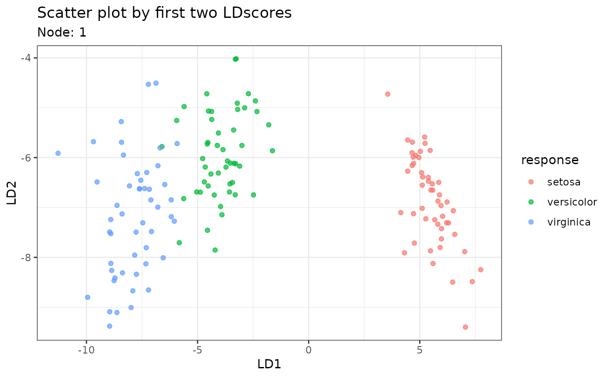

![[Experimental]](figures/lifecycle-experimental.svg) Fit an LDATree model.
Fit an LDATree model.
Usage
Treee(
formula,
data,
missingMethod = c("meanFlag", "newLevel"),
splitMethod = "LDscores",
pruneMethod = "none",
numberOfPruning = 10,
maxTreeLevel = 4,
minNodeSize = NULL
)Arguments
- formula
an object of class formula, which has the form
class ~ x1 + x2 + ...- data
a data frame that contains both predictors and the response. Missing values are allowed in predictors but not in the response.
- missingMethod
Missing value solutions for numerical variables and factor variables.
'mean','median','meanFlag','medianFlag'are available for numerical variables.'mode','modeFlag','newLevel'are available for factor variables. The word'Flag'in the methods indicates whether a missing flag is added or not. The'newLevel'method means that all missing values are replaced with a new level rather than imputing them to another existing value.- splitMethod
the splitting rule in LDATree growing process. For now,
'LDscores'is the only available option.- pruneMethod
the model selection method in the LDATree growing process, which controls the size of the tree. By default, it's set to
'none', which applies a direct stopping rule. Alternatively,'CV'uses the alpha-pruning process from CART. Although'CV'is often more accurate, it can be slower, especially with large datasets.- numberOfPruning
controls the number of cross-validation in the pruning. It is 10 by default.
- maxTreeLevel
controls the largest tree size possible for either a direct-stopping tree or a CV-pruned tree. Adding one extra level (depth) introduces an additional layer of nodes at the bottom of the current tree. e.g., when the maximum level is 1 (or 2), the maximum tree size is 3 (or 7).
- minNodeSize
controls the minimum node size. Think carefully before changing this value. Setting a large number might result in early stopping and reduced accuracy. By default, it's set to one plus the number of classes in the response variable.
Value
An object of class Treee containing the following components:
formula: the formula passed to theTreee()treee: a list of all the tree nodes, and each node is an object of classTreeeNode.missingMethod: the missingMethod passed to theTreee()An object of class
TreeeNodecontaining the following components:currentIndex: the node index of the current nodecurrentLevel: the level of the current node in the treeidxRow,idxCol: the row and column indices showing which portion of data is used in the current nodecurrentLoss: the training error (number of misclassified sample) of the current nodeaccuracy: the training accuracy of the current nodeproportions: shows the observed frequency for each classparent: the node index of its parentchildren: the node indices of its direct children (not including its children's children)misReference: a data frame, serves as the reference for missing value imputationsplitCut: the cut point of the splitnodeModel: one of'mode'or'LDA'. It shows the type of predictive model fitted in the current nodenodePredict: the fitted predictive model in the current node. It is an object of classldaGSVDif LDA is fitted. IfnodeModel = 'mode', then it is a vector of length one, showing the plurality class.offsprings: (available only ifpruneMethod = 'CV') showing all terminal descendant nodes of the current nodeoffspringLoss: (available only ifpruneMethod = 'CV') sum of thecurrentLossof theoffspringsof the current nodealpha: (available only ifpruneMethod = 'CV') the alpha in alpha-pruning from CART
Details
Unlike other classification trees, LDATree integrates LDA throughout the entire tree-growing process. Here is a breakdown of its distinctive features:
The tree searches for the best binary split based on sample quantiles of the first linear discriminant score.
An LDA/GSVD model is fitted for each terminal node (For more details, refer to
ldaGSVD()).Missing values can be imputed using the mean, median, or mode, with optional missing flags available.
By default, the tree employs a direct-stopping rule. However, cross-validation using the alpha-pruning from CART is also provided.
Examples
fit <- Treee(Species~., data = iris)
#> The unpruned LDA tree is completed. For now, it has 7 nodes.
# Use cross-validation to prune the tree
fitCV <- Treee(Species~., data = iris, pruneMethod = "CV")
#> The unpruned LDA tree is completed. For now, it has 7 nodes.
#> Pruning has started...
#> There are 7 node(s) left in the tree.
#> There are 5 node(s) left in the tree.
#> There are 3 node(s) left in the tree.
#> There are 1 node(s) left in the tree.
#> The pruned tree is completed. It has 7 nodes.
# prediction
predict(fit,iris)
#> [1] "setosa" "setosa" "setosa" "setosa" "setosa"
#> [6] "setosa" "setosa" "setosa" "setosa" "setosa"
#> [11] "setosa" "setosa" "setosa" "setosa" "setosa"
#> [16] "setosa" "setosa" "setosa" "setosa" "setosa"
#> [21] "setosa" "setosa" "setosa" "setosa" "setosa"
#> [26] "setosa" "setosa" "setosa" "setosa" "setosa"
#> [31] "setosa" "setosa" "setosa" "setosa" "setosa"
#> [36] "setosa" "setosa" "setosa" "setosa" "setosa"
#> [41] "setosa" "setosa" "setosa" "setosa" "setosa"
#> [46] "setosa" "setosa" "setosa" "setosa" "setosa"
#> [51] "versicolor" "versicolor" "versicolor" "versicolor" "versicolor"
#> [56] "versicolor" "versicolor" "versicolor" "versicolor" "versicolor"
#> [61] "versicolor" "versicolor" "versicolor" "versicolor" "versicolor"
#> [66] "versicolor" "versicolor" "versicolor" "versicolor" "versicolor"
#> [71] "versicolor" "versicolor" "versicolor" "versicolor" "versicolor"
#> [76] "versicolor" "versicolor" "versicolor" "versicolor" "versicolor"
#> [81] "versicolor" "versicolor" "versicolor" "versicolor" "versicolor"
#> [86] "versicolor" "versicolor" "versicolor" "versicolor" "versicolor"
#> [91] "versicolor" "versicolor" "versicolor" "versicolor" "versicolor"
#> [96] "versicolor" "versicolor" "versicolor" "versicolor" "versicolor"
#> [101] "virginica" "virginica" "virginica" "virginica" "virginica"
#> [106] "virginica" "virginica" "virginica" "virginica" "virginica"
#> [111] "virginica" "virginica" "virginica" "virginica" "virginica"
#> [116] "virginica" "virginica" "virginica" "virginica" "virginica"
#> [121] "virginica" "virginica" "virginica" "virginica" "virginica"
#> [126] "virginica" "virginica" "virginica" "virginica" "virginica"
#> [131] "virginica" "virginica" "virginica" "virginica" "virginica"
#> [136] "virginica" "virginica" "virginica" "virginica" "virginica"
#> [141] "virginica" "virginica" "virginica" "virginica" "virginica"
#> [146] "virginica" "virginica" "virginica" "virginica" "virginica"
# plot the overall tree
plot(fit)
# plot a certain node
plot(fit, iris, node = 7)
